Schedule
September
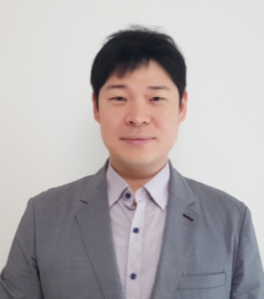
Formal Proof: A Key Technology for Controlling Superintelligent AI
Prof. Chung-Kil Hur, Seoul National University Programming Languages
Formal Proof: A Key Technology for Controlling Superintelligent AI
Prof. Chung-Kil Hur, Seoul National University Programming Languages
Chung-Kil Hur is a professor in the Department of Computer Science and Engineering at Seoul National University, where he leads the Software Foundations Lab. He received his Ph.D. from the University of Cambridge under Marcelo Fiore, after a B.S. in mathematics and computer science at KAIST, and held postdoctoral positions at Microsoft Research Cambridge and the Max Planck Institute for Software Systems.
His work spans software verification, program logics, compiler correctness, relaxed-memory concurrency, and the semantics of low-level languages such as LLVM, C/C++, and Rust. He has received several distinguished paper awards at the major programming-language venues and served as General Chair of PLDI 2025.
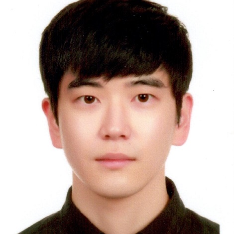
When New Browser Features Become New Attack Surfaces
Dr. Suyoung Lee, KAIST Security
When New Browser Features Become New Attack Surfaces
Dr. Suyoung Lee, KAIST Security
Suyoung Lee is a postdoctoral researcher at the KAIST Web Security and Privacy Lab. Their research sits at the intersection of artificial intelligence and computer security.
Recent work focuses on securing AI-based systems together with the classic web stack, browsers and web applications, and on what happens when the two are combined.

학술논문 작성법 & 대학원 생활 관련 조언
Prof. Junghoon Kim, UNIST Academic Writing
학술논문 작성법 & 대학원 생활 관련 조언
Prof. Junghoon Kim, UNIST Academic Writing
Junghoon Kim is an assistant professor at UNIST, where he leads the Data Mining Lab. He received his Ph.D. from Nanyang Technological University under Gao Cong, an M.S. from KAIST, and a B.S. from the University of Seoul.
His research covers algorithms and data mining, including cohesive subgraph discovery, community detection, hypergraph analysis, and social network analysis, with an emphasis on methods that are both provably sound and simple enough to implement.
Given in Korean, with live English translation.
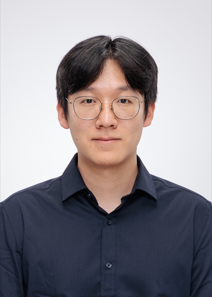
Computing System for Brain Computer Interface
Prof. Hunjun Lee, Hanyang University Computer Architecture Online
Computing System for Brain Computer Interface
Prof. Hunjun Lee, Hanyang University Computer Architecture Online
Hunjun Lee is an assistant professor in the Department of Computer Science at Hanyang University. He earned his Ph.D. at Seoul National University under Jangwoo Kim, working on brain-simulation accelerators and analog process-in-memory architecture, and stayed on as a postdoc to build scalable computer architectures for brain-computer interfacing.
His current interests are brain-computer interfaces, neuromorphic and AI architecture, and process-in-memory designs.
Joint session with the AI Graduate School.
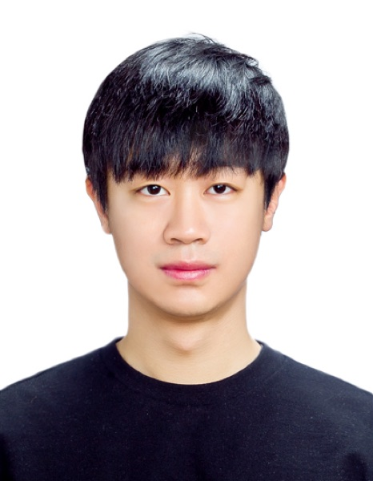
Scalable, Efficient, and Reliable AI Agents: A Systems Perspective
Prof. Sehoon Kim, KAIST AI Systems
Scalable, Efficient, and Reliable AI Agents: A Systems Perspective
Prof. Sehoon Kim, KAIST AI Systems
Sehoon Kim joins the KAIST Graduate School of AI as an assistant professor in Fall 2026. He received his Ph.D. in computer science from UC Berkeley under Kurt Keutzer, after a B.S. in electrical and computer engineering at Seoul National University.
Before returning to academia he worked on Grok at xAI, building inference and RL infrastructure. He is known for work on efficient LLM serving and agent systems, including SqueezeLLM and LLMCompiler, and was named an MLCommons ML and Systems Rising Star and an NVIDIA Graduate Fellowship finalist in 2024.
Joint session with the AI Graduate School.
October
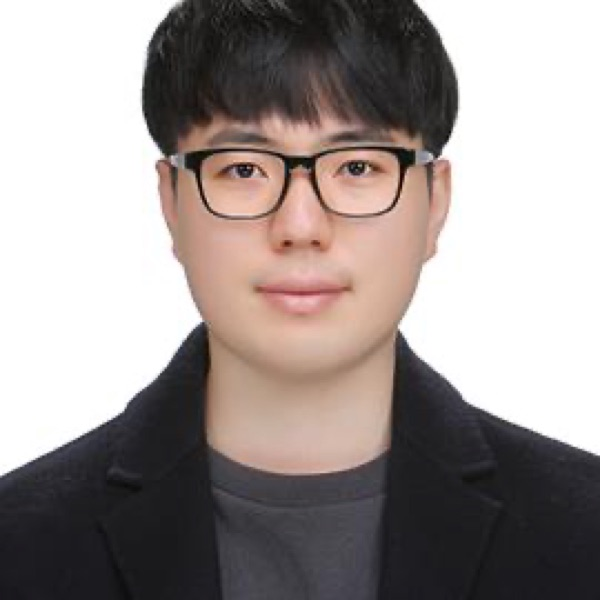
Singularity Has Begun: How AI Reshapes Cybersecurity
Prof. Insu Yun, KAIST Security
Singularity Has Begun: How AI Reshapes Cybersecurity
Prof. Insu Yun, KAIST Security
Insu Yun is an associate professor in the School of Electrical Engineering at KAIST, where he runs the Hacking Lab. He received his Ph.D. from Georgia Tech in 2020 and a B.S. from KAIST, and works on system security, in particular binary analysis, automatic vulnerability discovery, and automatic exploit generation.
His QSYM concolic execution engine won a USENIX Security best paper award and, later, the Frontiers of Science Award at ICBS. Away from the paper track he won Pwn2Own 2020 by compromising Apple Safari, took DEF CON CTF in 2015 and 2018, and won DARPA's AIxCC with Team Atlanta.
Joint session with the AI Graduate School.
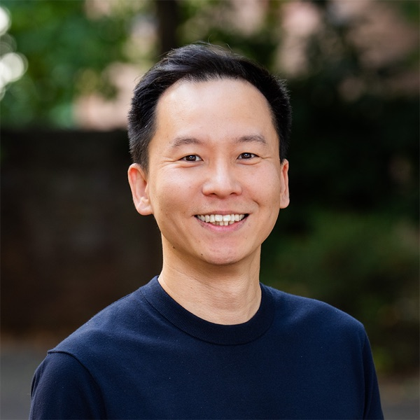
Designing Ultimate Interface for Human-AI Collaboration
Prof. Seongkook Heo, UNIST HCI
Designing Ultimate Interface for Human-AI Collaboration
Prof. Seongkook Heo, UNIST HCI
Seongkook Heo leads the Ultimate Interface Lab at UNIST and is a visiting assistant professor at the University of Virginia, where he spent several years on the faculty before joining UNIST.
He builds interaction techniques and devices that connect people, computers, and the physical world, aiming for interfaces that are expressive, efficient, and frictionless. His work has received best paper and honorable mention awards at CHI, MobileHCI, VRST, and ISS, along with a Meta Research Award.
No seminar (Midterm exam period)
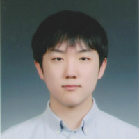
Privacy-Preserving Techniques for AI Systems
Prof. Kevin Nam, Kyung Hee University Security
Privacy-Preserving Techniques for AI Systems
Prof. Kevin Nam, Kyung Hee University Security
Prof. Kevin Nam
- Assistant Professor
- Secure and Private Intelligence Computing Systems Lab
- Kyung Hee University
Kevin Nam is an assistant professor in the Department of Computer Engineering at Kyung Hee University, leading the Secure and Private Intelligence Computing Systems Lab. He received his Ph.D. from Seoul National University.
His group applies privacy-enhancing techniques such as fully homomorphic encryption, MPC, zero-knowledge proofs, differential privacy, and federated learning to AI workloads including RAG, LLM serving, and on-device inference, and studies cryptographic accelerators and side-channel weaknesses in post-quantum cryptography.
November
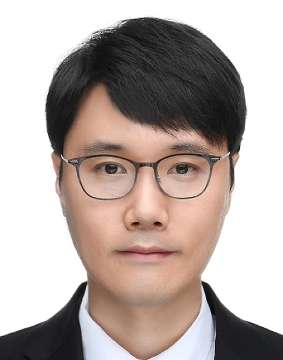
Toward Sound Binary Rewriting: From Patching to Reassembly
Prof. Hyungseok Kim, Chungnam National University Security
Toward Sound Binary Rewriting: From Patching to Reassembly
Prof. Hyungseok Kim, Chungnam National University Security
Hyungseok Kim joined Chungnam National University in September 2025 and leads the SWSec Lab. He earned his Ph.D. at the KAIST Graduate School of Information Security in 2024, following an M.S. at KAIST and a B.S. at Soongsil University, and spent 2011 to 2025 as a senior researcher at the Affiliated Institute of ETRI.
His research covers binary code analysis, automatic vulnerability detection, and software hardening. His work on reassembly, including the Reassessor tool and the USENIX Security 2023 paper “Reassembly is Hard,” earned an ACM Distinguished Paper Award at ISSTA 2024 and a KAIST outstanding dissertation award.
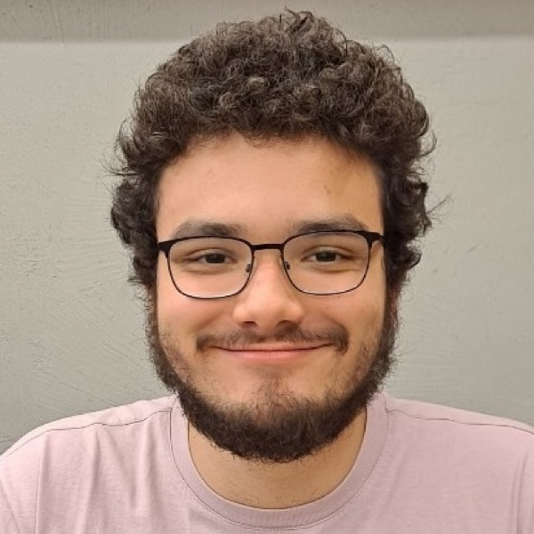
Title to be announced
Gabriel Lima, MPI-SP Responsible AI Online
Title to be announced
Gabriel Lima, MPI-SP Responsible AI Online
Gabriel Lima is a doctoral researcher in the Human-Centered Security and Privacy group at the Max Planck Institute for Security and Privacy, working with Yixin Zou. He completed his B.S. and M.S. at KAIST with Meeyoung Cha.
He studies responsible, human-centered AI: how the public perceives high-stakes AI systems, how prevailing narratives shape those perceptions, and how both should inform the ethical, legal, and social debates around AI governance. His methods combine quantitative, qualitative, and computational approaches, drawing on psychology, law, and communication.
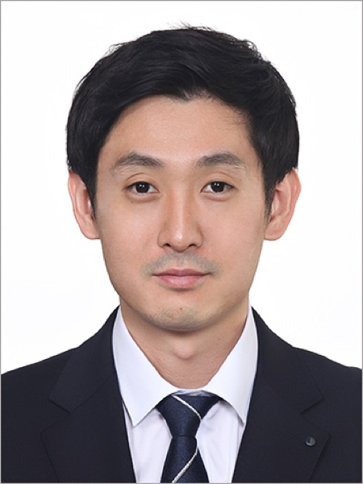
AI Meets Security: From Cybercrime to Bug Hunting
Prof. Sungjae Hwang, Sungkyunkwan University Security
AI Meets Security: From Cybercrime to Bug Hunting
Prof. Sungjae Hwang, Sungkyunkwan University Security
Sungjae Hwang is an associate professor at Sungkyunkwan University and directs the SoftSec Lab. He received his Ph.D. from KAIST in 2021 with a dissertation on interoperation vulnerabilities in Android.
The lab builds automated techniques for finding vulnerabilities in systems people actually run: Android, blockchain, automotive, cloud, and increasingly AI systems, combining ideas from software engineering, programming languages, and security.
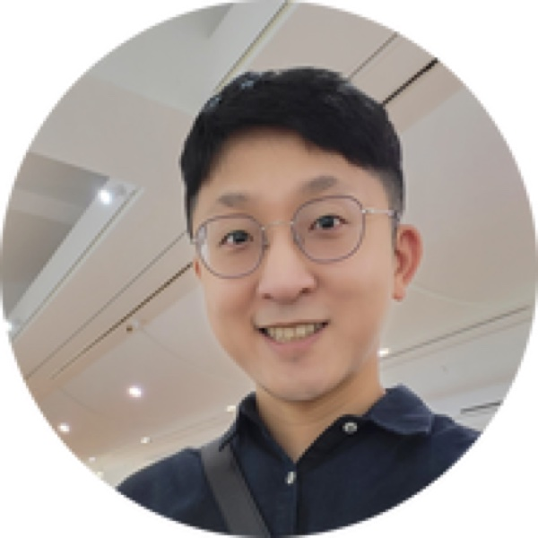
Graph Learning: Representation, Recommendation, Reasoning, and Reliability
Prof. Sungsu Lim, Chungnam National University AI
Graph Learning: Representation, Recommendation, Reasoning, and Reliability
Prof. Sungsu Lim, Chungnam National University AI
Sungsu Lim is an associate professor at Chungnam National University, where he leads the Data Intelligence Lab. He received his Ph.D. in data science from KAIST, advised by Jae-Gil Lee and Kyomin Jung, and spent 2024 to 2025 on sabbatical at Nota AI in Sunnyvale.
His research is on mining and learning with graphs, spanning community detection, graph neural networks, graph anomaly detection, and recommendation, together with data and knowledge engineering and efficient machine learning.
December
Following the Bias: From Web Data to Search, LLMs, and RAG
Jaebeom You, SeoulTech Data Mining
Following the Bias: From Web Data to Search, LLMs, and RAG
Jaebeom You, SeoulTech Data Mining
Jaebeom You
- Ph.D. Candidate
- Big Data-Driven AI Lab
- Seoul National University of Science and Technology
Jaebeom You is a Ph.D. candidate in the Graduate School of Data Science at SeoulTech, advised by Hyuk-Yoon Kwon in the Big Data-Driven AI Lab, and is expected to graduate this year.
He traces bias through the whole pipeline: from the web corpora that models are trained on, through search engines and geo-personalized news ranking, to the behavior of LLMs and RAG systems. Recent papers appear at WSDM 2026 and CIKM 2025.
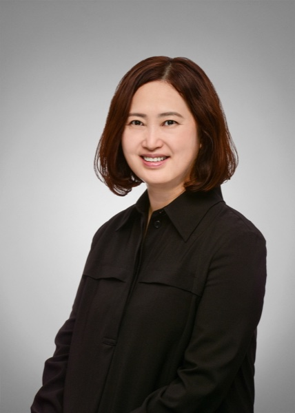
우리는 왜 이야기를 만드는가
임은영 작가, 독립서점 파밀 Beyond CS
우리는 왜 이야기를 만드는가
임은영 작가, 독립서점 파밀 Beyond CS
임은영 작가는 2022년 영남일보 신춘문예로 등단한 소설가로, 같은 해 12월 울산 중구 성남동에 '소설가의 책방'을 표방하는 소설 전문 독립서점 파밀을 열었습니다. 서점에서 북토크와 소설 창작 강연을 꾸준히 이어오고 있습니다.
이번 세미나에서는 잠시 전산학 바깥으로 나가, 우리는 왜 이야기를 만들고 또 필요로 하는지에 대해 이야기합니다.
This talk will be given in Korean.
No seminar (Final exam period)